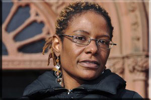
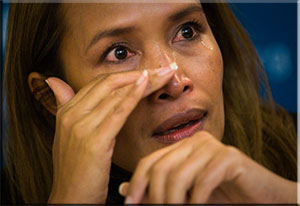
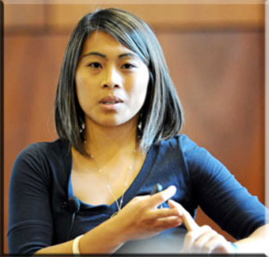

Famed actress Jada Pinkett Smith wasn't aware of how serious the issue of sex trafficking really was until her daughter Willow brought it to her attention. Ms. Smith's guilt and lack of knowledge on the situation along with her daughter's eagerness to be involved with the cause was enough to get her out of her seat and involved as well. Teaming up with Don't Sell Bodies the same organization that sex trafficking survivor Minh Dang advocates for, she released a video called Nada Se Compara directed by fellow actress Salma Hayek with her band that illustrates how trafficking victims are being deceived into becoming sex slaves for the traffickers and the horrible conditions that they endure each day. She continues to fight for the victims as we speak.
Film Copyright: Jada Pinkett Smith and Don't Sell Bodies
Famed singer Ricky Martin has founded the Ricky Martin Foundation since 2004 to save children from the sex traffickers that exploit them for profit. In his own words: "My commitment to the cause of stopping the exploitation of children was born from a humbling experience. In 2002, I witnessed the horrors of human trafficking as we rescued three trembling girls living on the impoverished streets of India. Preventing these girls from falling prey to this horrendous crime was a personal awakening." Ever since that humble experience as Mr. Martin has put it, he has dedicated himself to saving children from the growing menace of sex trafficking especially since he's a parent himself.

When Ms. Frundt was 14 years old, she was forced into prostitution by her pimp. When her pimp came into her life, he showered her with attention and listened to her frustrations. In her mind, he understood her better than her parents. Little did Ms. Frundt know that he was manipulating her into doing his own bidding. When she didn’t make enough money as a prostitute, her pimp beat her so bad in front of the other girls so as to instill fear in the group. Even when Ms. Frundt made enough money for him, she was still subjected to even more abuse like no eating or sleeping. Eventually, Ms. Frundt was able to escape from her abusive pimp. As an adult Tina has started her own organization Courtney's House to help other victims of sex trafficking and to stop the traffickers that abused her as a child. She states “Now that you have the knowledge, what will you do with it?” and with that declaration, Ms. Frundt continues the fight against the evil that is sex trafficking worldwide.

Born to a tribal minority family in the Mondulkiri province of Cambodia, Somaly Mam began life in extreme poverty. With limited options as a severely marginalized ethnic group, and living in unimaginable despair, her family often resorted to desperate means to survive. This confluence of dire circumstances led to Somaly being sold into sexual slavery at a very young age. Somaly was forced to work in a brothel along with other women and children for many years, and was brutally tortured and raped. One night, she was made to watch as her best friend was viciously murdered. Deciding then that she would no longer “keep her silence,” Somaly heroically escaped her captors and began to build a new life abroad.

Minh Dang, 28, was just 3 years old when she was sexually abused by her father. The mistreatment wouldn't end there. At 10 years old, she was taken to a brothel for the first time by her parents, who would then leave her there for days and sometimes weeks. In her own words: "My dad took me to these businesses, they were cafes, and they were fronts for brothels. He would take me to brothels and leave me there for weeks on end, and brothels sell children for sex so that was my job while I was there." While Minh continued to suffer as a victim of sex trafficking, she excelled in her studies in school while everyone else was oblivious to her situation. In her own words: "The first two years I was going to college but was still enslaved. I was still being sold by my parents. Then they paid my final bill for college, and that’s when I cut all ties with them, that I would contact the police if they contacted me again, and then that was it." Today, she works alongside Jada Pinkett Smith an outspoken advocate against sex trafficking and being an advocate for the non-profit Don't Sell Bodies supporting sex trafficking victims worldwide.